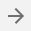
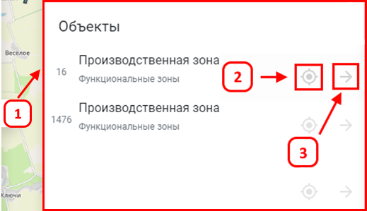
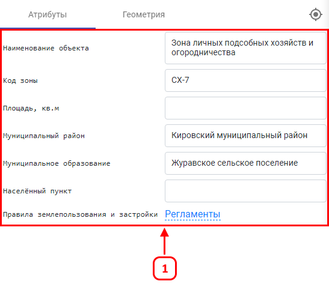
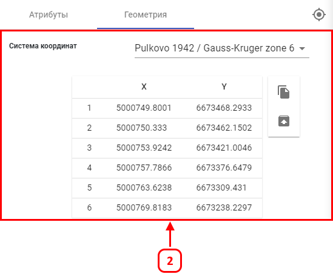

(2). Для того чтобы открыть дополнительную
информацию об объекте следует кликнуть «Открыть»
(2). Для того чтобы открыть дополнительную
информацию об объекте следует кликнуть «Открыть»
Для получения информации об объекте, требуется кликнуть ЛКМ по объекту, в правой стороне откроется панель с
объектами (1), находящимися в точке клика. Далее для перехода к нужному объекту, требуется нажать
«Перейти к объекту»(2). Для того чтобы открыть дополнительную
информацию об объекте следует кликнуть «Открыть»

(3).
После этого откроется панель с дополнительной информацией об объекте (1). В ней можно узнать атрибутивную информацию (1) и геометрию - координатные точки объекта в различных системах координат) (2).


В случае, когда к объектам прикреплены «Ссылки на документы», например «Регламенты ПЗЗ» (1), имеется возможность открыть ссылку внутри системы, для этого следует кликнуть ЛКМ по наименованию ссылки (1). После этого появится всплывающее окно с информацией (2).